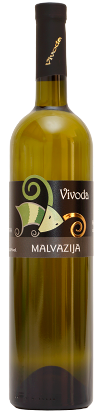

Bijelo · suho
Malvazija
Malvazija je slamnato-žute boje sa zelenkastim odsjajem. Miris joj je tipičan i fin, voćni i cvjetni, s izraženim mirisom cvijeta bagrema, bazge i grejpa. Okus je ugodan i svjež, voćnog karaktera: zaokruženo, uravnoteženo i harmonično vino s notom slanosti i karakterističnom sortnom gorčinom. Završetak je čist i dugotrajan.
Preporuka: jela od riba i školjaka te bijelo meso.
Od 2005. nositelj oznake Istrian Quality (IQ)- Vinogorje
- zapadnoistarsko
- Sorta
- malvazija
- Šećer
- suho
- Alkohol
- 13,2 %
- Boca
- 0,75 L
- Serviranje
- 10–12 °C Upit za ovo vino